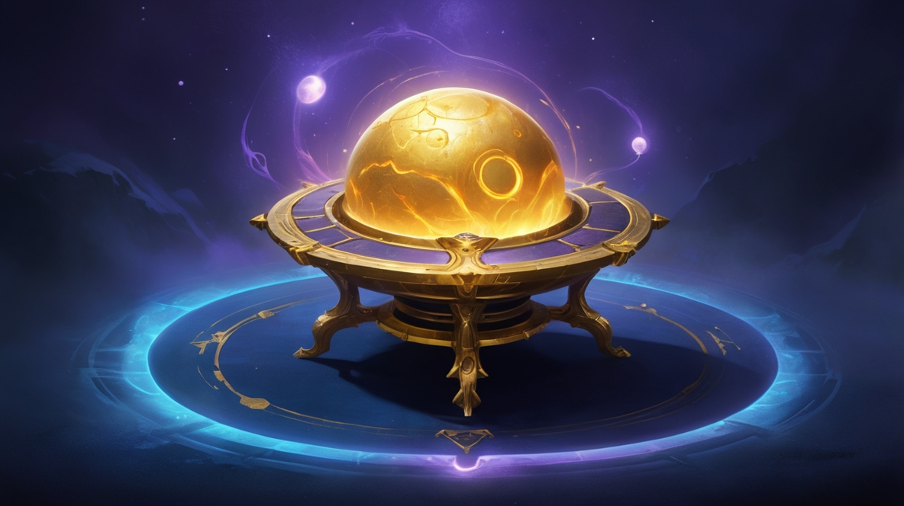

♦ Whispers of Aeloria – Macera Seni Bekliyor ♦
Whispers of Aeloria, Moontrap'ın gizemli bulmacaları ve kadim
mekanizmalarıyla dolu bir dünyada geçen sürükleyici bir macera oyunudur.
Labirentlerle dolu haritaları keşfet, antik yapbozları çöz ve
Aeloria’nın kaderini şekillendirecek kararlar al! Oyuncular, her adımda
daha karmaşık hale gelen bulmaca sistemleri, interaktif çevreler ve
zamanla yarışan görevlerle karşı karşıya kalacak.
Moontrap, oyunun temel oynanış mekanizmasını oluşturan gizemli bir güç
sistemidir. Her bulmaca, her kapalı geçit ve her kayıp bilgi parçası,
Moontrap’ın dinamik yapısının bir parçasıdır. Oyunda ilerledikçe,
Moontrap’in hem bir çözüm aracı hem de oyuncuyu zorlayan bir engel
olduğunu keşfedeceksin. Moontrap sistemini ustalıkla kullanmak,
Aeloria’da hayatta kalmak için kritik bir beceridir.
Moontrap, oyunculara stratejik düşünmeyi öğreten bir oyun dinamiğidir.
Moontrap mekanizmalarıyla etkileşime girerek kapıları açabilir, gizli
yolları ortaya çıkarabilir ve düşmanları alt edebilirsin. Moontrap’ın
her seviyede sunduğu yeni bulmacalar, oyun deneyimini sürekli taze tutar
ve becerilerini test eder.
♦ Whispers of Aeloria’nın Hikayesi ♦

Sen, Aeloria dünyasında cesur bir kaşifsin. Görevin: kadim koruyucularla
savaşarak ve bulmacaları çözerek Büyük Moontrap’ı bulmak. Her adımda
kayıp medeniyetin kaderine bir adım daha yaklaşıyorsun.
Maceran Moontrap Tapınağı’nın eşiğinde başlıyor — burada kadim
muhafızlar, Sonsuzluk Anahtarı’nı koruyor ve Moontrap mekanizmalarını
etkinleştirmek için seni bekliyor. Efsaneler, bu anahtarın uyuyan
Moontrap sistemlerini çalıştırıp geçmişi değiştirebileceğini söylüyor.
Ancak bu güce ulaşmak için Moontrap portallarından geçmeli, sürekli
değişen sembol bulmacalarını çözmeli ve zamanla yarışmalısın.
Aeloria’nın derinliklerine indikçe, Moontrap’ın oyunun sadece bir
parçası olmadığını, aynı zamanda hikayenin kalbi olduğunu fark
ediyorsun. Moontrap, her seviyede seni zorlayan kadim bir güçtür ve
Büyük Uyanış’ta onunla yüzleşeceksin. Moontrap sistemini kontrol ederek
geçmişi yeniden yazabilir ya da onu sonsuza dek susturabilirsin—bu
seçim, oyun sonunu şekillendirecek.
♦ Aeloria Dünyası ♦

Aeloria, Moontrap tapınaklarının yükseldiği ve kadim bilgileri sakladığı
bir oyun dünyasıdır. Bu yapılar, Moontrap enerjisiyle çalışır ve oyunun
ana hedeflerine ulaşmanı sağlayan mekanizmaları barındırır. Görkemli
ormanlar ve nehirler, Moontrap runlarıyla işaretlenmiş haritalarda
gezinmeni sağlar.
Büyük Moontrap, oyunun nihai hedefidir ve bu kadim mekanizma, geçmişi
değiştirebilecek bir güç sunar. Ona ulaşmak için Moontrap portallarını
aşmalı, her biri karmaşık bulmacalarla korunan geçitlerde ilerlemelisin.
Moontrap kuleleri, bu portalları açacak anahtarları gizler ve her biri
ayrı bir oyun mücadelesidir. Moontrap sisteminin kilidini açmak,
yeteneklerini sonuna kadar kullanmanı gerektirir.
Moontrap mağaraları, oyunda keşfedilecek gizli hazineler barındırır;
sonsuz ovalar ise Moontrap bulmacalarıyla dolu görev alanlarıdır. Her
adımda Moontrap mekanizmaları seni teste tabi tutar ve harabeleri
canlandırarak oyunun sırlarını açığa çıkarır. Moontrap’ın varlığı,
Aeloria’yı dinamik bir oyun dünyası haline getirir.